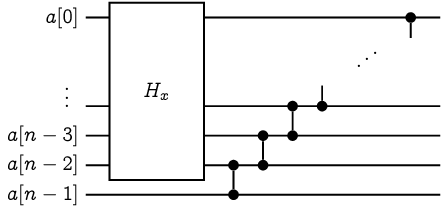
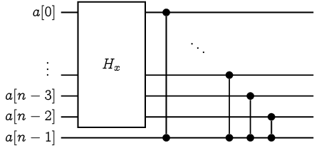
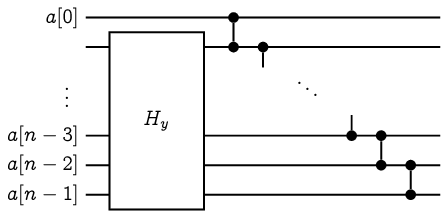

驗證排序網路
給定一個排序網路，我們有沒有什麼樣的演算法可以檢驗這個排序網路能否正確排序呢？ 假設我們要排序的資料數量有 \(n\) 筆、排序網路的總工作量為 \(m\) 次比較。 顯然我們有個 \(O(m\cdot n!)\) 時間的演算法：枚舉所有 \(n!\) 種排列，並且實際丟進去排序看看。
0-1 法則 Zero-One Principle
一個值得提及的觀察是，我們不一定需要枚舉所有的 \(n!\) 種排列。如果對於任何 \(k\)，只要該排序網路都能夠分得出前 \(k\) 小的資料、與剩下的 \(n-k\) 筆資料，就能夠保證排好所有資料了。有了這個觀察，我們可以將 \(n!\) 種排列的檢驗過程，精簡至 \(2^n-n-1\) 種輸入即可：只要能夠對所有長度為 \(n\) 的任意亂序 0-1 序列排序，就能保證排序網路的正確性。
0-1 法則的限制
真的需要檢查所有的 \(2^n-n-1\) 種 0-1 序列（任意未按順序排列之 0-1 序列）才能保證排序網路的正確性嗎？很遺憾地，是的，我們可以藉由以下引理得知，如果我們採用 0-1 序列作為排序網路的測試，我們至少需要 \(2^n-n-1\) 種不同的輸入才行。
引理 44 [Chung-Ravikumar 1987, Knuth 1997]
令 \(\sigma\) 是一個長度為 \(n\) 的亂序 0-1 序列，那麼存在一個排序網路 \(H_\sigma\)，可以排好所有 \(\sigma\) 以外的 0-1 序列，唯獨 \(\sigma\) 無法被正確排序。
我們不妨將這樣的排序網路稱為關於 \(\sigma\) 的阿基里斯的排序網路 (Achilles' Sorting Network of \(\sigma\)) 吧！其實這被稱作 single exception sorting networks1。
引理 44 的證明
萬能的數學歸納法是你的好朋友。我們可以對序列長度 \(n\) 進行歸納：當 \(n=2\) 的時候，唯一的亂序序列是 \(\tt{10}\)，一個空的排序網路就能夠達到我們的需求。
更強的歸納假設
Knuth 在他的書籍當中針對這樣的阿基里斯排序網路給了一個更強的要求：若 \(\sigma\) 恰好包含 \(k\) 個 \(\texttt{0}\) 以及 \(n-k\) 個 \(\tt{1}\)，那麼 \[H_\sigma(\sigma) = {\tt{0}}^{k-1}\texttt{10}{\tt{1}}^{n-k-1}\] 換句話說，Knuth 對於這個不正確的排序有著嚴格的定義。而歸納初始條件 \(n=2\) 時，空的排序網路也剛好滿足了這樣的定義。
現在給定 \(n\ge 3\)，讓我們假設對於所有 \(n' < n\) 的任何亂序 0-1 序列 \(\sigma'\)，都存在該序列的阿基里斯排序網路 \(H_\sigma'\)。
歸納的部分
令 \(\sigma[0..n-1]\) 是一個長度為 \(n\) 的亂序 0-1 序列。由於 \(\sigma\) 是亂序，前 \(n-1\) 個位元 \(x:=\sigma[0..n-2]\) 或後 \(n-1\) 個位元 \(y:=\sigma[1..n-1]\) 其中之一必定也是亂序。我們可以根據 \(x\) 和 \(y\) 是否為亂序、以及剩下一個位元是 0 或 1，分成以下四種情形並且建構 \(H_\sigma\)。
|
Case 1 |
 |
|
Case 2 |
 |
|
Case 3 |
|
|
Case 3 |
 |

在加強了歸納假設以後，排序網路給出來的結果變得更好驗證了。 筆者強烈建議大家試著跑看看上述的排序網路（挑選一個 case、並試著將 \(\sigma\) 以及任何 \(\neq\sigma\) 序列丟進去跑看看。）就能理解為什麼這個建構是正確的。在驗證的過程中，或許也能得到一個屬於自己的 "Aha-Moment"！
歷史備註
Chung 和 Ravikumar 在 1990 年出版的論文中，其實有幾個滿慘烈的小狀況，比如論文中第一張圖片內的 \(H_{010}\) 和 \(H_{101}\) 兩個排序網路畫反了、更嚴重的包含被原作者忽略掉證明的 Case B (圖片 4) 的建構似乎是不完全正確的。 但這並不影響這篇論文對於『驗證排序網路』提出重要觀察的地位。筆者在這邊採用的證明是 Knuth 在 TAOCP Vol 3 裡面的精妙解答。
是否存在更有效率的演算法呢？
聰明的你可能馬上注意到了：如果我們只是想知道這個排序網路是否能夠正確排序，不見得需要實際去跑這個排序網路呀！說不定有更有效率的演算法，直接判斷它。
不過呢，很可惜地，這個問題其實是 \(\mathsf{coNP}\)-完備的。一般來說可以從著名的 \(\mathsf{coNP}\)-完備問題 『恆真問題』(Tautology) 轉化之。 早在 1980 年，Rabin 提出了從『三維匹配』轉化到『測試排序網路』的證明 (Johnson 說是 private communication，那就是 private communication)。 而這個問題也被收錄在 1982 年由 Johnson 把各種 NP 和 coNP 完備問題蒐整的專欄2當中。在 Knuth 的書中3也鉅細彌遺地給出了轉化方式。 Chung 與 Ravikumar 在提出了測試排序網路的論文後，在同一年間他們也證明了這個問題是 \(\mathsf{coNP}\)-完備的4 (他們強調在論文中使用了新的轉化方法，能夠證明更多問題是 \(\mathsf{NP}\)-完備或 \(\mathsf{coNP}\)-完備的，不只是測試排序網路問題。 後續如 Ian Parberry 提出了更淺的構造方法5，讓這個問題在各種更自然的設定底下都是 \(\mathsf{coNP}\)-完備的。
如果你能夠設計出一個多項式時間的演算法，測試一個排序網路是否總能正確排序，那麼事情就大條了(稱讚意味)！
參考資料
- StackExchange 上面的提問
- Moon Jung Chung and B. Ravikumar, Bounds on the size of test sets for sorting and related networks, Discrete Mathematics 1990. (Conference version: International Conference on Parallel Processing, 1987.)
- 0-1 法則參見 CLRS 演算法課本中題目 Problem 8-7 The 0-1 sorting lemma，而這個稱呼最早似乎是由 Knuth 在他的著作 The art of computer programming [Knuth 1973] 裡面提及的。
- UIUC 任教的 Sariel Har-Peled 教授的上課講義 https://sarielhp.org/teach/2004/b/webpage/lec/14_sortnet_notes.pdf
- Knuth 的 TAOCP Vol. 3, page 244, 習題 56 （解答在 page 673)。
Ian Parberry, On the Computational Compexity of Optimal Sorting Network Verification, PPAL'91.
David S. Johnson, The NP-Completeness Column: An Ongoing Guide, J. Algorithms, 1982.
Knuth 的 TAOCP Vol. 3, page 242, 習題 52 （解答在 page 672)。
Moon Jung Chung and B. Ravikumar, Strong nondeterministic Turing reduction - a technique for proving intractability, J. Computer and System Sciences, 1989. (Conference version: Annual Conference on Structure in Complexity Theory, 1987.)
Ian Parberry, Single-exception sorting networks and the computational complexity of optimal sorting network verification, Mathematical systems theory, 1990.